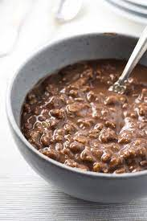

Chocolatey Oatmeal

Description
Oatmeal is a very healthy food, but unfortunately, it
does not come delicious on its own. That's why we have
curated an amazingly tasty oatmeal dish that will blow
your mind!
Ingredients
- Rolled oats (2 cup)
- Milk (2 cup)
- Raisins (10)
- Peanut butter (2 tbsp)
- Cinnamon (2 tbsp)
- Chocolate chips (1/4 cup)
- Granola (1/4 cup)
- Maple syrup (3 tsp)
- Salt (1/4 tsp)
- Chocolate whey protein (2 scoop)
Steps
- Add rolled oats, raisins, salt, and drizzle maple syrup to a medium bowl
- Microwave on high for 4 minutes
- Let sit for 1 minute
- Add peanut butter, chocolate chips, granola, and sprinkle cinnamon
- In a separate cup, stir chocolate whey protein in 1 cup water
- Stir mixture into the bowl of oats and enjoy